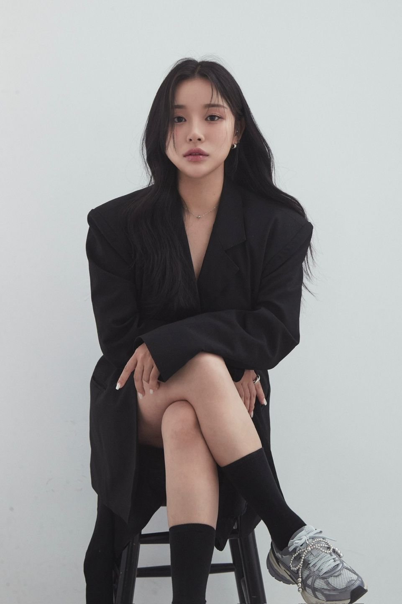
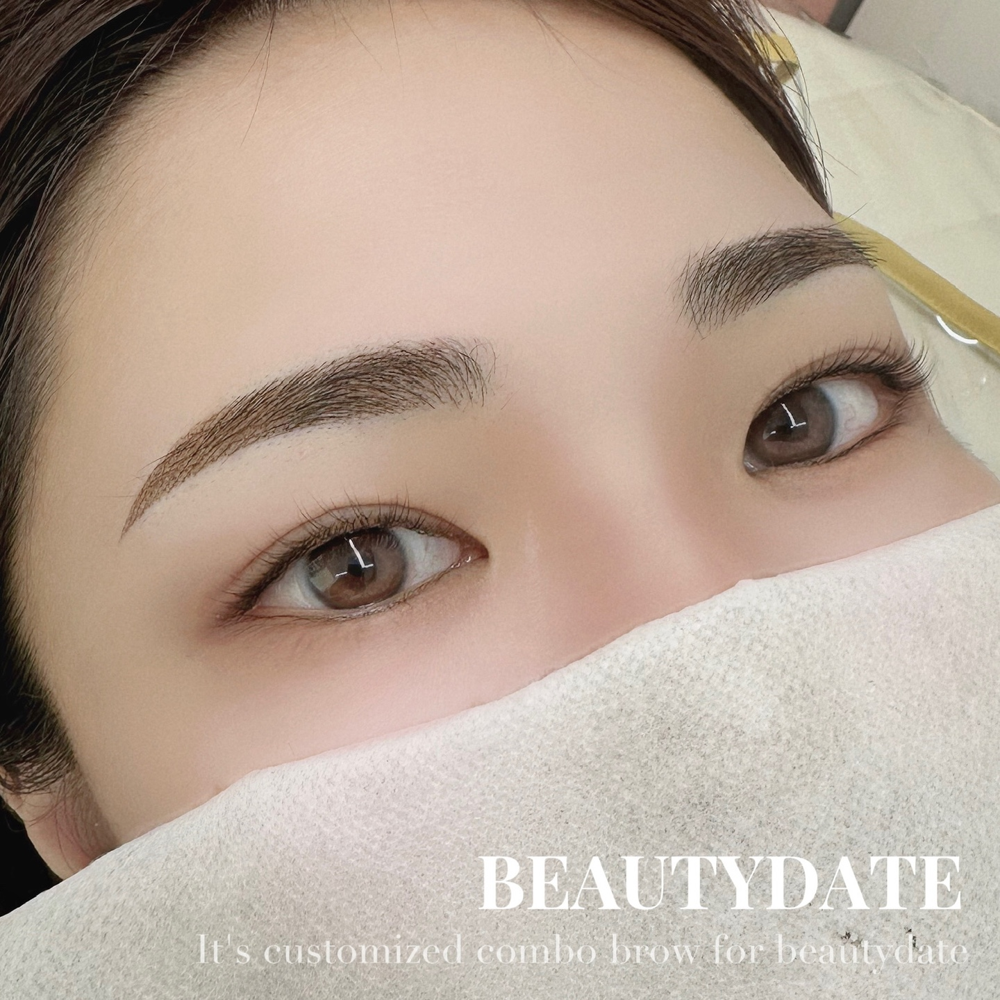
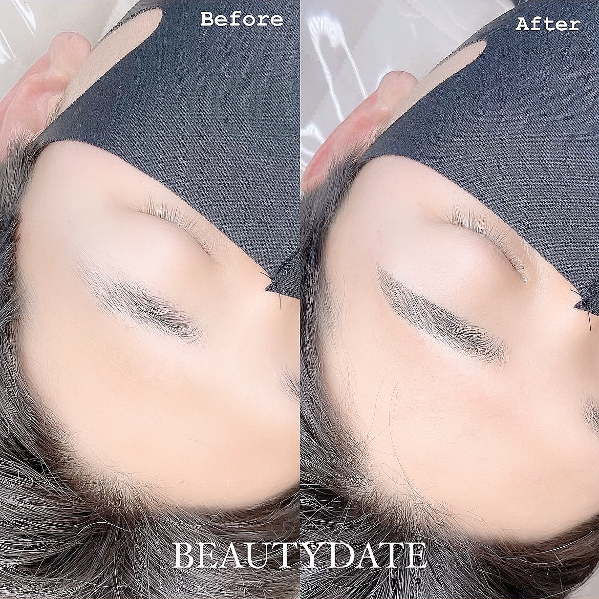
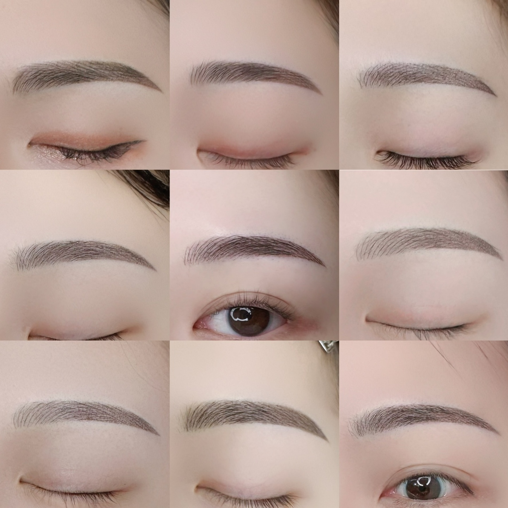
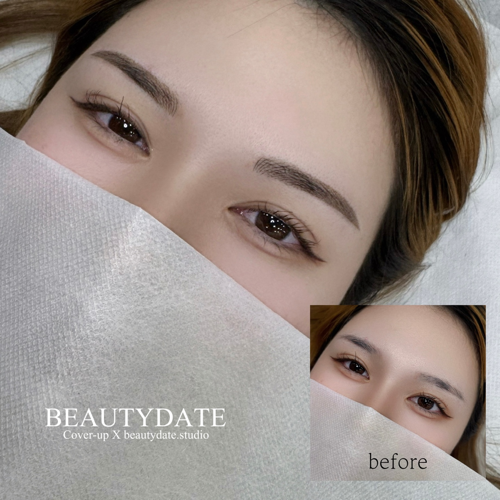
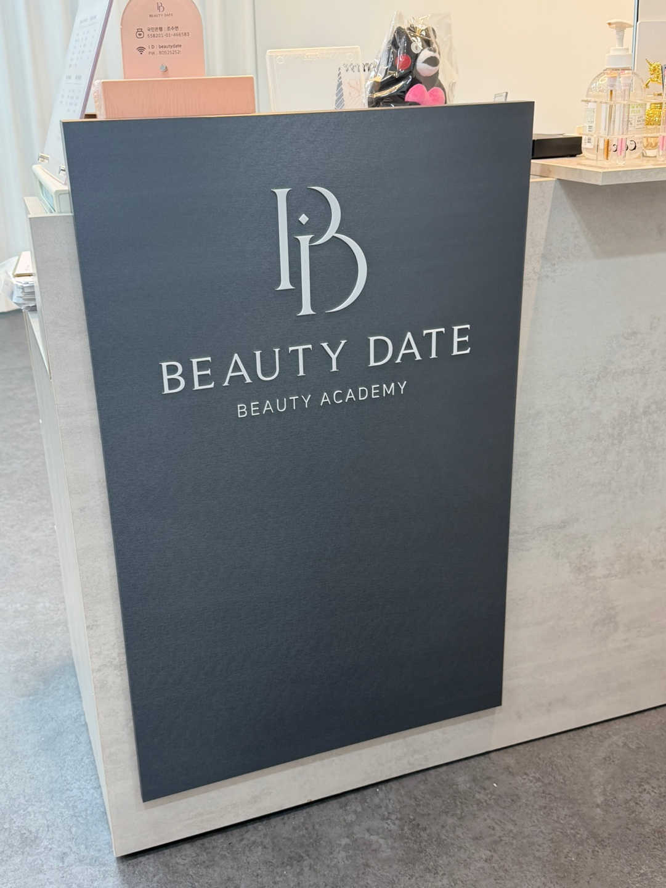
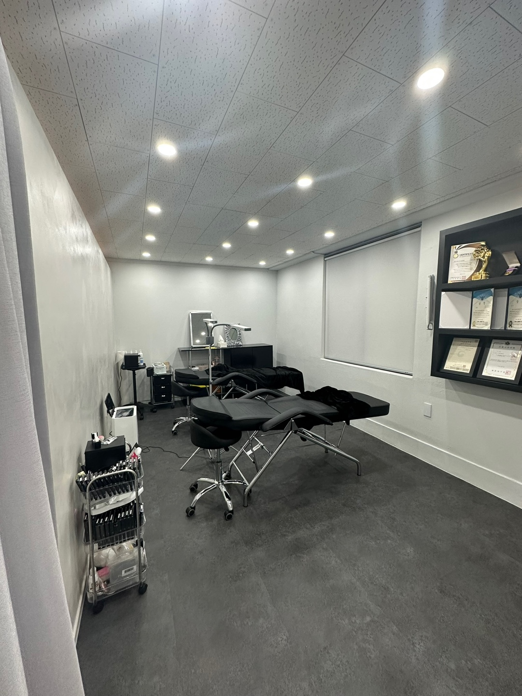
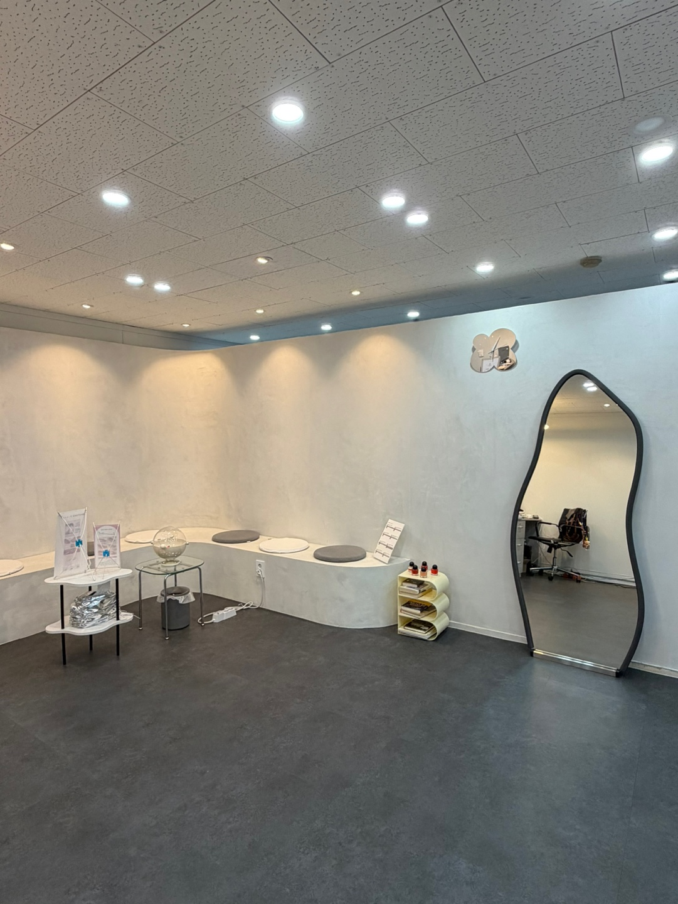

상담
원하는 분위기와 현재 눈썹 상태, 피부 컨디션을 먼저 확인합니다.

01 — SIGNATURE
A thoughtful approach to semi-permanent beauty뷰티데이트는 유행하는 모양을 그대로 따르기보다, 얼굴형과 눈매, 기존 눈썹의 결을 세심하게 살펴 한 사람에게 어울리는 균형을 찾습니다.
우리의 디자인 방식↘
02 — SELECTED WORKS
A collection of real brow designs실제 고객의 시술 결과를 살펴보세요.
피부와 기존 눈썹에 따라 결과는 달라질 수 있습니다.



사진은 실제 시술 사례입니다. 고객의 사진 사용 동의를 받은 뒤 게시해 주세요.
03 — OUR PROCESS
Considered at every step원하는 분위기와 현재 눈썹 상태, 피부 컨디션을 먼저 확인합니다.
얼굴의 비율과 눈매에 맞춰 디자인하고, 시술 전 충분히 조율합니다.
확정한 디자인을 바탕으로 차분하게 시술을 진행합니다.
시술 후 관리 방법과 리터치 관련 내용을 안내해 드립니다.
04 — MEET THE DIRECTOR
Beautydate, Busan
DIRECTOR · SUYEON CHO
반영구 시술 12년, 샵 운영 8년의 경험을 바탕으로 고객 한 분 한 분의 얼굴에 어울리는 디자인을 고민합니다. 충분히 듣고, 함께 확인하고, 세심하게 마무리합니다.
05 — THE STUDIO
A calm space, just for you


06 — VISIT US
We look forward to meeting you정확한 주소와 운영 시간, 찾아오시는 방법을 확인해 업데이트할 예정입니다.
부산 · 상세 주소 업데이트 예정
운영 시간 확인 후 업데이트 예정
BEAUTYDATE · BUSAN
예약 링크와 카카오톡 채널 정보가 준비되면 이곳에서 바로 연결됩니다.